多年的汽车线束加工定做生产经验，积累了大量的线束插头连接件，接线端子，我们拥有丰富的线束配件资源和设计开发经验，什么样的线束都能够根据需求加工，为用户提供全方位的图纸设计以及用较低的成本，生产出合格的线束产品，本厂汽车线束加工定做流程如下：
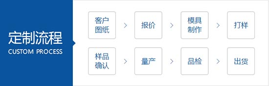
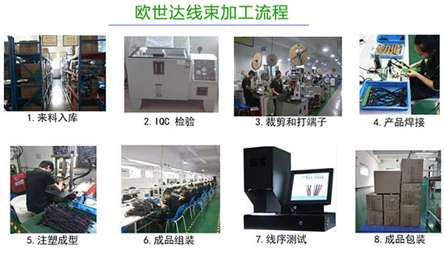
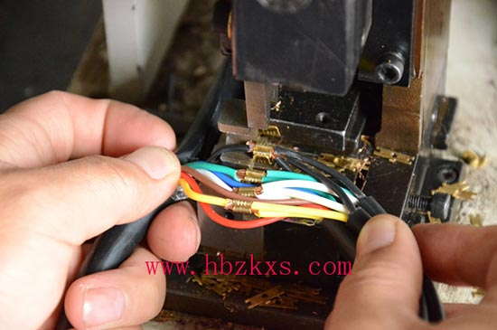
本厂拥有先进的线束设备，多条生产线，每一个连接处都用专业设备精密冲压，线束都是阻燃的，线芯是无氧铜，每一套产品都经过一一检测，确保交到用户手中的线束是合格的。
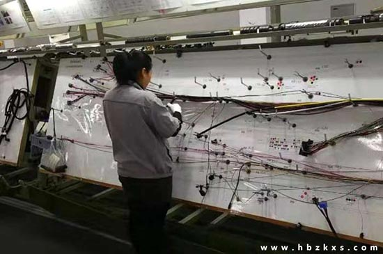
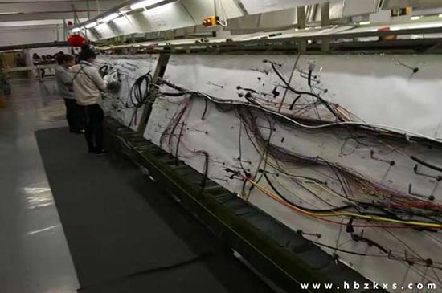
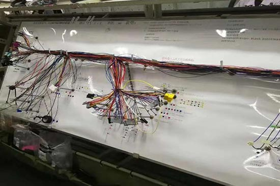
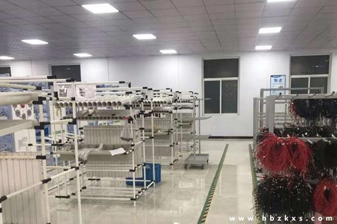
每一套汽车线束加工完成后，都会进入测试阶段，我厂引进大型电脑检测设备，可准确测试出线束十分合格，
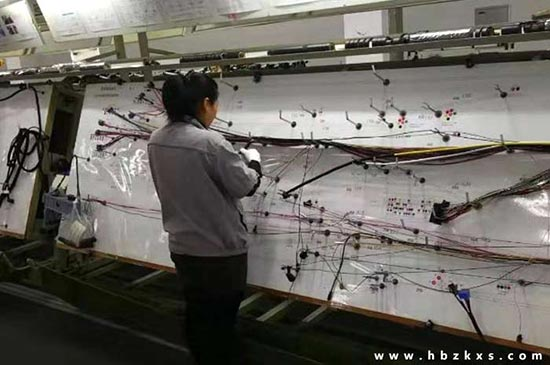
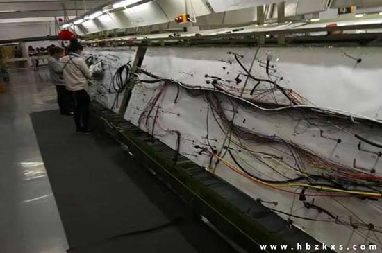
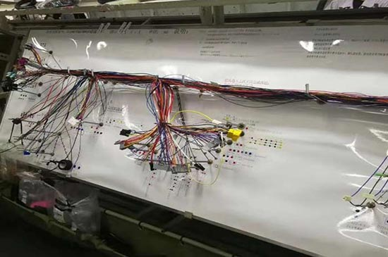
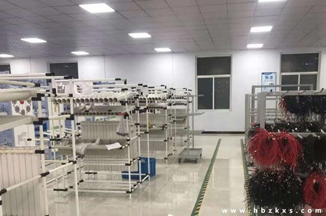
每一套汽车线束加工完成后，都会进入测试阶段，我厂引进大型电脑检测设备，可准确测试出线束十分合格，
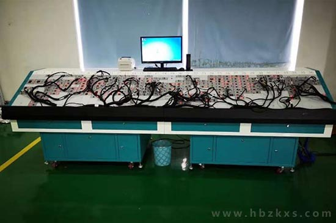
大批量生产的用户根据需求绘制线路图，在由绘图设备批量生产出pvc材质的大型汽车线束图纸，固定在挂线设备上进行批量生产，用短的时间生产出合格的线束产品交给用户。
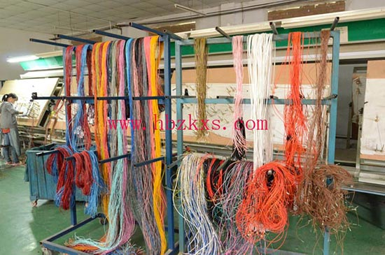
引进台式汽车线束生产线,大大节省了组装时间和人工成本，为用户提供了低廉的价格
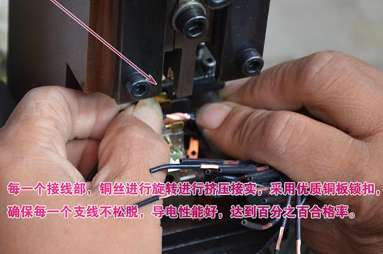

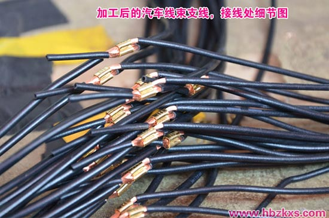
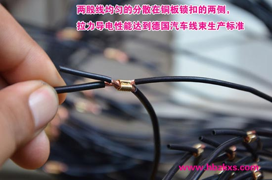
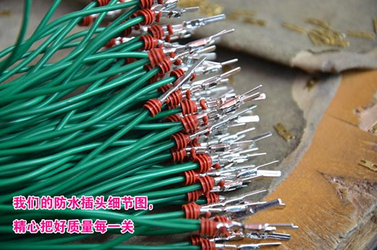
以下是威曼汽车线束案例
新厂房2018年6月份投入使用。新增先进的流水线，供应量明显提升，期待各大客户厂家考察参观。
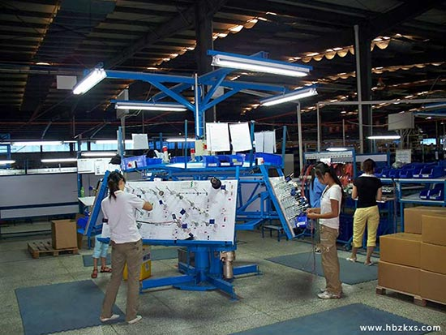
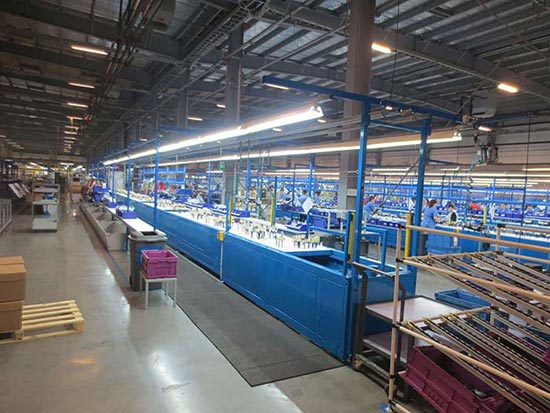
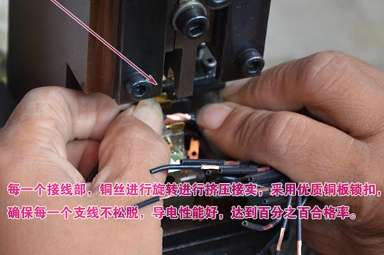
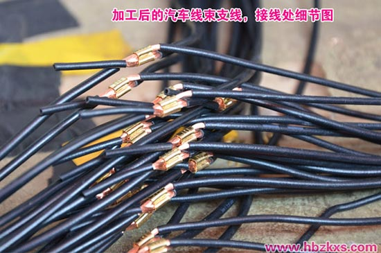
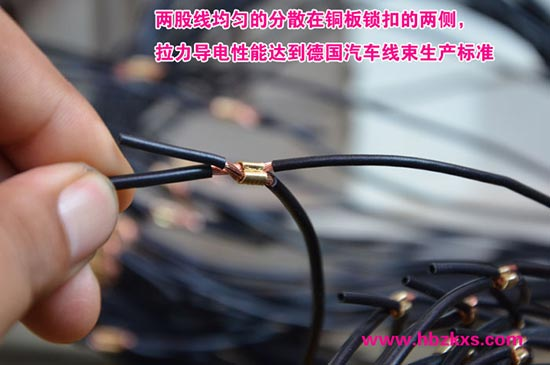
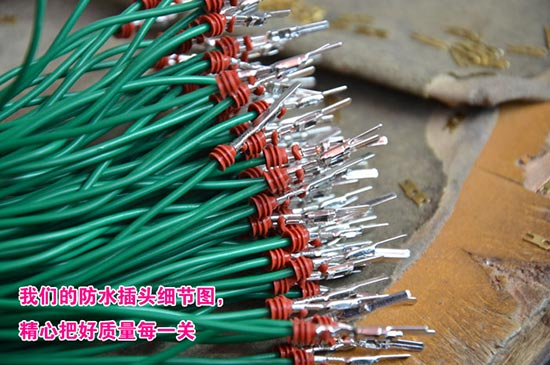
以下是威曼汽车线束案例
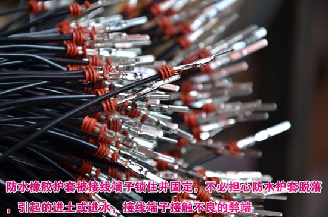
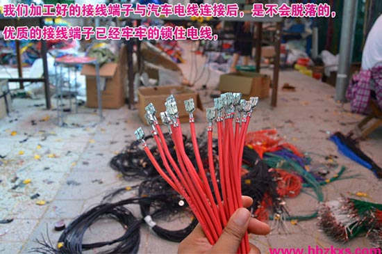
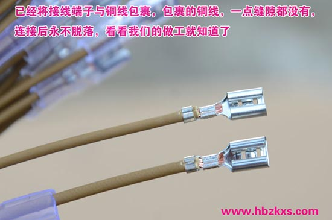
我们能够加工定做大部分线束，可加工各种汽车线束，新能源汽车线束，工程机械线束，农业机械线束，三轮车线束，医疗器械线束，电子显示，以及改装车线束等，如果您没有样品或图纸，本厂还可为您研发设计服务，
服务承诺：
专业制造、专业服务，威曼汽车线束为你创造更多价值
不断提升服务质量，是温州市威曼汽车线束有限公司永恒的主题。威曼线束，质量严格把关，责任到人，确保生产、销售、服务的健康运行。加强与用户沟通，竭诚为广大客户提供优质产品，至善至美服务，特此我厂做出如下承诺：
1.定做标准
不论是依照图纸还是样件均可生产，加工余量少，生产周期短，效率高；能满足不同客户对你不同等级产品质量的要求；
2.售前服务
产品介绍，技术交流，非标产品设计，疑难解答
3.售中服务
守信合同，保证及时供货，随时保持与客户联系
对特殊或复杂的产品，我厂安排技术人员对用户进行产品使用、故障排除、调式及维修进行培训和指导。
4售后服务
.威曼汽车线品质保期为自出厂起 12 个月，实行"三包"服务（包退、包换、包修）。
新厂房2018年6月份投入使用。新增先进的流水线，供应量明显提升，期待各大客户厂家考察参观。
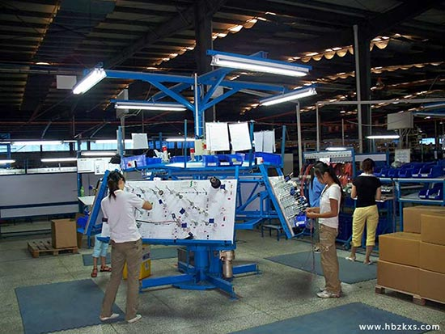
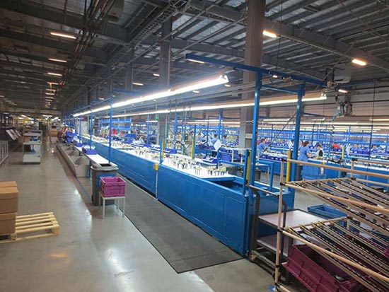
在线束加工这一个行业，越来越多的人加入这一行业，造成了价格的竞争，质量竞争，客户的争夺，汽车线束生产工艺的落后，就会造成生产成本增加，产品质量低，甚至被淘汰，我厂不断的学习，不断的引进先进的设备，改进设备，去除汽车线束生产流程中不必要的人工成本，例如我厂引进的汽车线束加工设备，这个设备代替了人工，和人工相比，在保质保量的同时又提高了生产速度，每天可节约上千元的费用，这些费用让利客户，又一次降低了线束加工价格，提升了竞争力。
为您展示----汽车线束设备加工过程----视频演示：
威曼汽车线束流水线----工作视频展示：
威曼汽车线束案例展示：
看看工人缠绕汽车线束的视频：
更多线束加工视频点击这里。